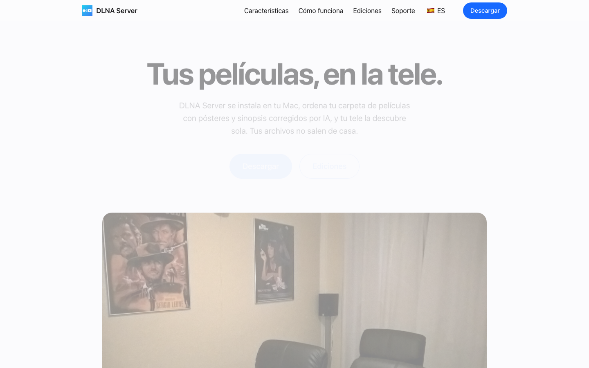

Transferir
Descarregar o último DMG — teste gratuito, licença vitalícia 19,90 €
www.dlnaserver.com — guias, suporte e compra
Uma edição Lite em sandbox está a caminho da Mac App Store
O que é
O DLNA Server transforma a pasta de filmes do seu Mac num servidor multimédia a sério: filmes e séries aparecem na televisão com cartaz, sinopse e legendas — sem instalar nada na TV. Tudo funciona localmente; a sua biblioteca nunca sai do Mac.

Funcionalidades
Servidor DLNA/UPnP — descoberta SSDP, navegação ContentDirectory, streaming HTTP por intervalos. Compatível com TVs Samsung/LG/Sony, VLC, Kodi, consolas…
Biblioteca com IA — limpeza automática de nomes de ficheiros, identificação de filmes, cartazes, classificações, trailers e metadados no seu idioma (ES/EN/FR/IT/DE/PT + idiomas geridos remotamente).
TV em direto e IPTV — listas M3U e portais Xtream/Stalker, EPG, logótipos de canais e gravação — totalmente independente da biblioteca DLNA.
Downloads integrados — motor de torrents (TorrServer) e cliente eD2k/eMule nativo.
Legendas e capas —
.srt externos, faixas incorporadas e endpoints de artwork DLNA para cada leitor.App de barra de menus — vive na bandeja; continua a servir com a janela fechada.
Leitor web local — veja em qualquer navegador, com posição de retomada.
Privacidade primeiro — a sua biblioteca nunca sai do Mac; apenas estatísticas anónimas opcionais.
Como usar
- 1Descarregue o DMG, arraste o DLNA Server para Aplicações e abra-o.
- 2Escolha as pastas com os seus filmes, séries e música.
- 3O ícone aparece na barra de menus — o servidor já está visível na rede.
- 4Na TV (ou VLC/Kodi/consola), procure "DLNA Server" nas fontes e navegue na biblioteca.
- 5Opcional: adicione uma lista M3U nas Definições para TV em direto com guia EPG.
Edições e preços
| Lite | Pro | |
|---|---|---|
| Preço | Grátis | 19,90 € · compra única |
| Servidor DLNA | ✓ | ✓ |
| Biblioteca IA | Limitada | Completa |
| IPTV + EPG + gravação | — | ✓ |
| Distribuição | Mac App Store (em breve) | DMG nesta página |
Requisitos
macOS 13 (Ventura) ou posterior · Apple Silicon e Intel (binário universal) · Assinado e notarizado pela Apple.
O que contém este repositório
DLNA-Server-<versão>.dmg— instalador assinado + notarizado, arrastar para AplicaçõesDLNA-Server-<versão>.zip— arquivo de atualização (assinado EdDSA) usado pelo atualizador da app
Perguntas frequentes
Funciona com a minha televisão?
Se a TV suporta DLNA/UPnP (Samsung, LG, Sony — a maioria desde 2010) ou usa VLC/Kodi/Fire TV, sim. Nada para instalar na TV.
Os meus filmes são enviados para alguma cloud?
Não. Todo o processamento e streaming acontecem na rede local. A IA consulta bases de metadados públicas, mas os ficheiros nunca saem do Mac.
A licença é uma subscrição?
Não. O Pro é uma compra única de 19,90 € com atualizações incluídas.
Suporte
- Site: www.dlnaserver.com · Suporte: /soporte
- Email: support@it-systems.es